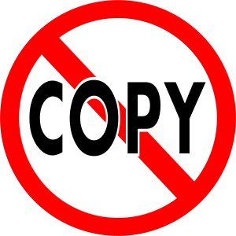

Hacer videojuegos en JavaScript que funcionen en un navegador
Usar herramientas de desarrollo profesionales para el desarrollo web
Gestionar recursos (imágenes, audio…) para usarlo en videojuegos en un navegador
Cómo funciona un navegador por dentro
Cómo gestionar el desarrollo con un toolset real
Cómo hacer proyectos de forma profesional, presentarlos y entregarlos
No ser pasivos
Buscar recursos en Internet: RTFM o GIYF
Tener ganas de aprender, no de aprobar
Proponer cosas, intentar cosas nuevas
El objetivo es que lo que hagáis en la asignatura valga más allá de la asignatura
Carlos León
Despacho 444 (4ª planta)
cleon@ucm.es
El material de la asignatura ha sido creado en colaboración con Mozilla
Figura 1: ¡Gracias a Salvador de la Puente, Belén Albeza, Ismael Sagredo, Guillermo Jiménez y Antonio Calvo!
Proyecto, por grupos (100% de la nota)
Se dará realimentación en los hitos y en las sesiones de laboratorio, pero la nota final será la última
Los hitos son obligatorios, y su presentación pública en clase, también
Cada miembro declarará su contribución relativa al proyecto, para ponderar la nota
Recordad que lo importante es la implementación
En un proyecto hay muchos factores, mucha gente y muchas tareas
En un videojuego hay muchas tareas de dominios muy distintos, y dividir el área a la que pertenece cada tarea es, a veces, poco realista
Eso quiere decir que se os pedirá un proyecto de
\(\text{puntos} = 100 \times \text{estudiantes}\)
El proyecto tendrá que definir un alcance (una lista de características, tamaño, etc)
A cada característica se le asignarán una serie de horas
Cada característica se evaluará y, al final, se dará un porcentaje de las horas en función de su acabado
Al evaluar, el boss queda un poco limitado, se dan 300 puntos
Al movimiento, todo (500 puntos)
En total, el proyecto ha obtenido 800 puntos
Para sacar la máxima nota se necesitaban 900 puntos (\(9~\text{estudiantes} \times 100 ~\text{puntos}\))
En total, una aproximación a la calidad del proyecto sería \(\frac{800}{900} \approx 8.8\)
Pero la nota del proyecto no es la nota de los miembros
La nota de cada estudiante se hará en función de la contribución de cada uno, por puntos
El grupo tendrá que controlar cuántos puntos merece cada miembro
(Es parte de lo que queremos que trabajéis en la asignatura)
Según el ejemplo
De los 800 puntos obtenidos:
Obviamente, la suma de los puntos de cada persona deberá ser igual a los puntos del proyecto
(Más adelante os contamos cómo repartirlos)
Los puntos se os darán como una cifra única que podréis repartir como queráis
Pero hay un límite en los puntos que podéis recibir por área
De forma orientativa, en un proyecto de 500 puntos (y con cambios a discreción del equipo docente):
Iréis teniendo notas y realimentación durante la asignatura, pero es solo para que sepáis el estado y el criterio del equipo docente
Se irá revisando el alcance del proyecto, y se os dará información sobre cómo vais y qué se espera que hagáis
Todo el contenido que se trabaja en los proyectos es acumulativo
Aunque se os irá dando realimentación e información de cómo va el proyecto según los criterios de evaluación, la nota final será lo único que tenga peso
Independientemente de sus partes, el proyecto tiene que ser aceptable globalmente
El proyecto tiene que funcionar, ser jugable completamente, tener un aspecto visual y gráfico aceptable y no tener errores graves
A partir de esa premisa se pondrá la nota
La convocatoria extraordinaria tiene los mismos requisitos que la ordinaria
Habrá que recuperar las partes cuyo mínimo no se haya satisfecho dentro del proyecto
No habrá presentación pública, y es posible (según la ficha docente) que haya partes que no se puedan recuperar, pero siempre será posible aprobar
En cualquier caso, lo ideal es hablar con el equipo docente antes de afrontar la entrega extraordinaria para establecer unos objetivos y un alcance
Copiar es ilegal. Significa suspender

Figura 2: Se hará un control de copias estricto
Measuring actual learning versus feeling of learning in response to being actively engaged in the classroom (Louis Deslauriers, Logan S. McCarty, Kelly Miller, Kristina Callaghan, and Greg Kestin). PNAS, Vol 116, No. 39 (2019)
La ficha docente está en el CV
Tiene información oficial
La ficha es general y establece el "contrato" de la enseñanza oficial, es obligatorio ceñirse a ella
Estas transparencias son más concretas, pero no está de más echarle un vistazo a la ficha
El CV es la herramienta oficial de comunicación
Cualquier cosa publicada en el CV será considerada establecida y oficial (fechas, entregas, apuntes…)